Installation and configuration
Ansible is a tool to automate IT administration tasks. It comprises one controlling node, on which the Ansible collections are stored and executed, and one or multiple managed nodes, for which the administration tasks are performed. The general concept of Ansible assumes agent-less operations, i.e. the Ansible collections are only installed on the controlling node, but not on the managed nodes. Whenever updates are applied to the Ansible collections, they only need to be applied to the controlling node.
Nevertheless, the usage of Ansible collections requires a one-time setup on both the controlling node and the managed nodes. All nodes need to be enabled to run Open Source packages and have Python 3 installed. On the controlling node, also Ansible version 2.9 or higher must be installed.
Prerequisites
To execute Ansible playbooks for SAP on IBM i, the following is required:
Your endpoints must run IBM i release 7.2 or higher.
Licensed program 5770-SS1, option 33 (“Portable App Solutions Environment”) must be installed.
Licensed program 5733-SC1, options *BASE (“IBM Portable Utilities for i”) and 1 (“OpenSSH, OpenSSL, zlib”) must be installed.
Open Source Package Management through IBM i Access Client Solutions must be enabled as described at https://www.ibm.com/support/pages/node/706903.
You must install Python 3 on your endpoints from https://ibm.biz/ibmi-rpms.
You must run Ansible version 2.9 or later on your controlling node (Ansible automation engine).
It is recommended that you use a dedicated user profile on IBM i for your Ansible playbooks. There may be different authority requirements for the individual roles. To avoid authority problems, it is recommended that you create the user profile with user class *SECOFR or with sufficient special authorities:
CRTUSRPRF USRPRF(ANSIBLE) PASSWORD(<...>) USRCLS(*SECOFR) TEXT('Ansible functional user') SPCAUT(*USRCLS) OWNER(*USRPRF) LANGID(ENU) CNTRYID(US) CCSID(500) LOCALE(*NONE)
or:
CRTUSRPRF USRPRF(ANSIBLE) PASSWORD(<...>) USRCLS(*PGMR) TEXT('Ansible functional user') SPCAUT(*ALLOBJ *SECADM *JOBCTL) OWNER(*USRPRF) LANGID(ENU) CNTRYID(US) CCSID(500) LOCALE(*NONE)
Installation using IBM i Access Client Solutions (ACS)
If IBM i Access Client Solutions client is not installed on your workstation or at a level earlier than 1.1.8.3, download it from https://www.ibm.com/marketing/iwm/platform/mrs/assets?source=swg-ia (IBM ID required) and install it on your workstation.
On the target IBM i server, start the SSHD (Secure Shell Daemon) TCP/IP Server, which is shipped with 5733-SC1 option 1. Command:
STRTCPSVR SERVER(*SSHD)Start IBM i Access Client Solutions on your workstation.
Configure every IBM i host that you want to use as Ansible controlling node or Ansible managed node in IBM i Access Client Solutions.
The following steps will prepare your IBM i host to run open-source software in general and install the packages Ansible 2.9 packages required to run Ansible 2.9, including python3. You do not need the Ansible package on the managed nodes (only on the controlling node), but it is easier to collect all required packages for the managed nodes by simply installing Ansible there as well. Repeat the following steps for each IBM i host that you want to use with Ansible:
Select the target IBM i host.
Select Tools –> Open Source Package Management:
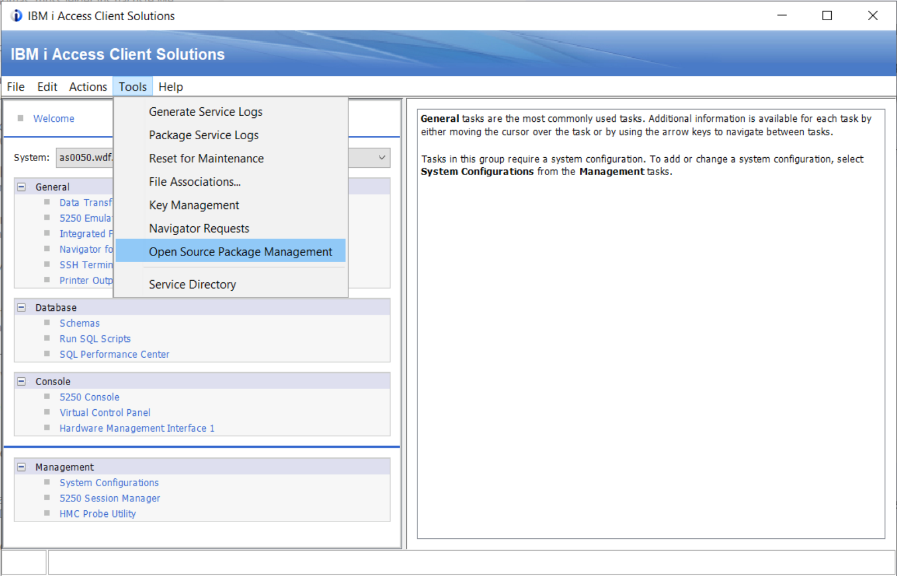Specify login information for your IBM i server. You can keep the defaults for other parameters in this screen. To allow QSECOFR to login, you must have specified
PermitRootLogin yesin /QOpenSys/QIBM/ProdData/SC1/OpenSSH/etc/sshd_config) before starting the SSH daemon: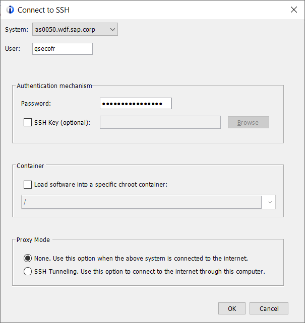Confirm the popup message about the RSA key fingerprint:
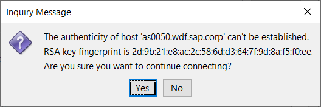Confirm to install the open-source environment in the next popup window:
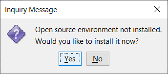Wait while the open-source environment is downloaded:
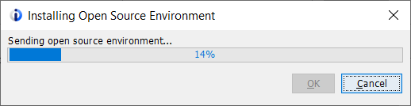At the end, you will see a completion message and an output window with possible error messages. Both windows can be closed if no error occurred:
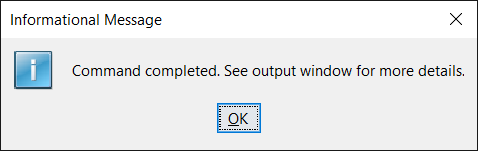 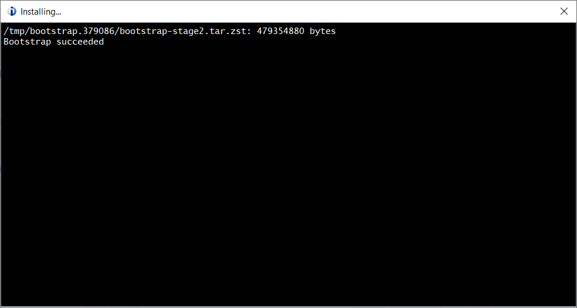Upon success, you will receive a list of installed packages. Note that python3 (required for Ansible) is not part of the list:
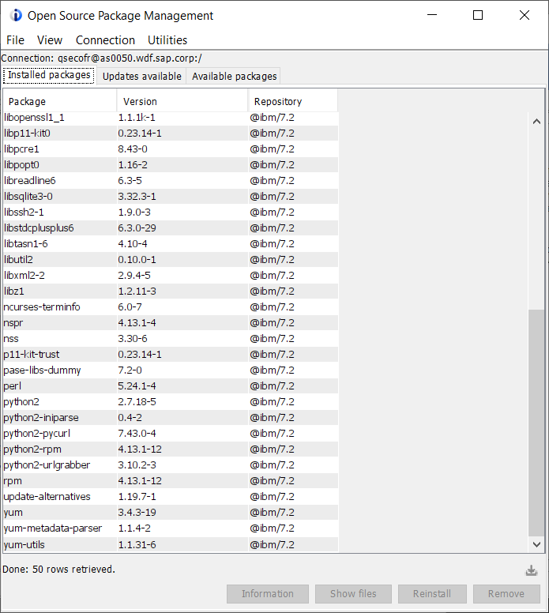Select the tab Available Packages in Tools –> Open Source Package Management. Mark the line for Ansible 2.9 and select Install:
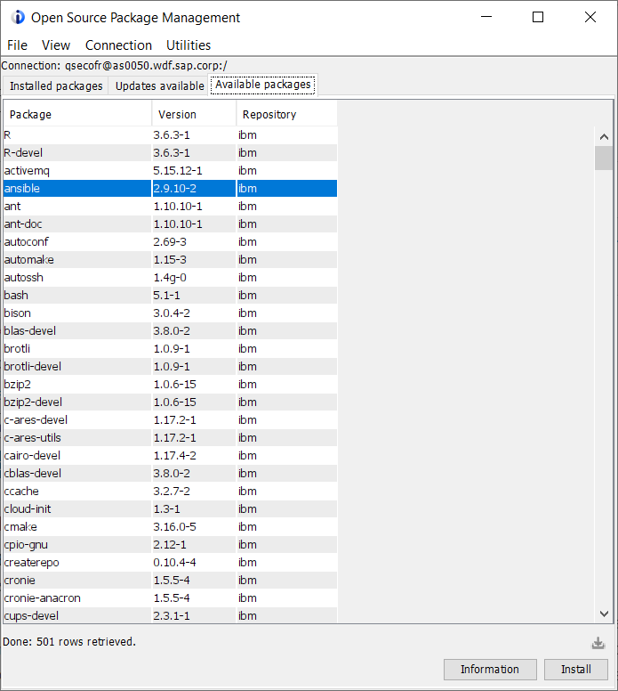Besides Ansible, a number of packages around Python 3 will also be installed:
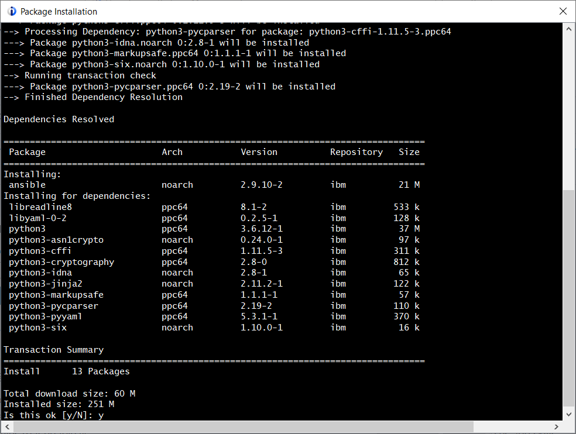Upon success, you will see a completion message similar to this:
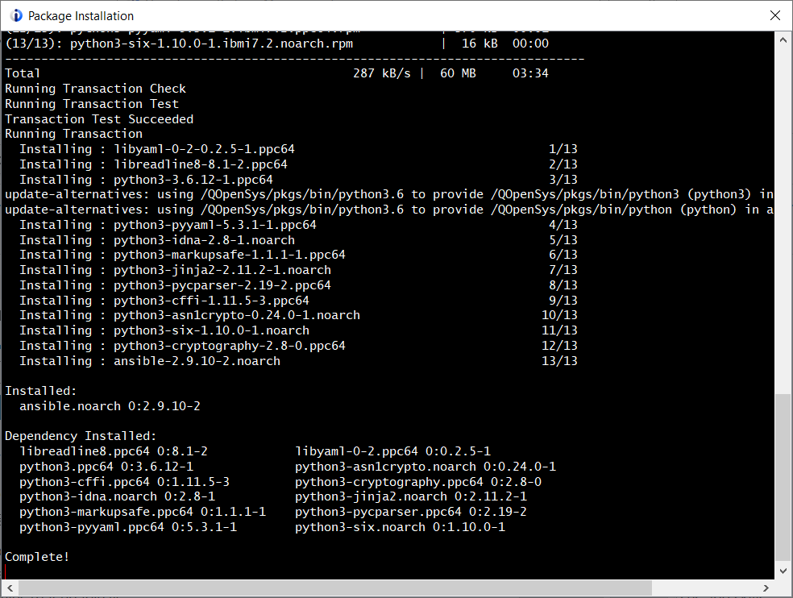
Your IBM i host is now ready to act as an Ansible controlling node or managed node. You can now install the Ansible roles that you want to use on your controlling node.
Installation using a command line interface (SSH, QP2TERM)
On every IBM i host you want to be an end point for ansible (target host, remote host), you have to perform the following 2 steps:
Install the new Open Source Solutions package. Because 5733-OPS no longer is available for IBM i V7R2 and higher (see: https://www.ibm.com/support/pages/node/668177), install the new Open Source Solutions package according to https://ibmi-oss-docs.readthedocs.io/en/latest/yum/README.html
Download bootstrap.sh (https://public.dhe.ibm.com/software/ibmi/products/pase/rpms/bootstrap.sh) and bootstrap.tar.Z (https://public.dhe.ibm.com/software/ibmi/products/pase/rpms/bootstrap.tar.Z), put it on the IBM i machines, then execute:
cd /tmp touch /tmp/bootstrap.log; /QOpenSys/usr/bin/ksh /tmp/bootstrap.sh > /tmp/bootstrap.log 2>&1
After successful installation, adjust your search path
$PATHby adding/QOpenSys/pkgs/bin:PATH="/QOpenSys/pkgs/bin:${PATH}" export PATH
Install Python 3 on the IBM i hosts you want to use as remotes:
PATH=/QOpenSys/pkgs/bin:/QOpenSys/usr/bin:/usr/ccs/bin:/usr/sbin:.:/usr/bin:/usr/local/bin:$PATH export PATH LIBPATH=.:$LIBPATH export LIBPATH yum install python3-pip python3-ibm_db python3-itoolkit
For every IBM i host you want to use as controlling node(s), additionally perform the following 2 steps:
Install Ansible (required only on the controlling node(s)):
yum install ansible
Install the Ansible roles that you want to use (required only on the controlling node(s)):
ansible-galaxy install <path to ansible role>
Your IBM i host is now ready to act as an Ansible controlling node or managed node. You can now install the Ansible roles that you want to use on your controlling node.
Configuration
On the controlling node, create an Ansible configuration file similar to the following example:
vi ~/.ansible.cfg #remote_tmp = ~/.ansible/tmp #local_tmp = ~/.ansible/tmp inventory = ~/.ansible/hosts library = ~/.ansible/modules roles_path = ~/.ansible/roles ssh_args = -i /home/johndoe/ssh/id_rsa transfer_method = scp
On the controlling node, create an inventory file similar to the following example:
vi ~/.ansible/hosts [ibmi_servers] ibmiserver01.mycorp.com ibmiserver02.mycorp.com ibmiserver03.mycorp.com [ibmi_servers:vars] ansible_python_interpreter=/QOpenSys/pkgs/bin/python3
License
This collection is licensed under the Apache 2.0 license.
Copyright
Copyright IBM Corporation 2022